새로운 출발선
진보당 4기 출범에 맞춰 연구지의 표지 디자인을 전면 개편했습니다. 시각적 쇄신과 함께 현실에 더 날카롭게 개입하겠다는 다짐을 담았습니다. 이번 호는 불평등, 내란의 청산, 선거제도, 청년 정치 등 한국 사회의 핵심 모순을 정면으로 다룬 4편의 글을 싣습니다.
첫 번째 원고는 이상민 나라살림연구소 수석연구위원이 보내준 ‘초과세수 문제의 정치학’입니다. 반도체 초호황으로 급증한 세수는 단순한 재정기술의 문제가 아니라 국가 거버넌스를 재설계할 정치적 기회라는 문제의식을 담았습니다. 필자는 현금 살포나 금융형 국부펀드 대신 에너지 인프라 확충과 기초보장·통합돌봄 등 실물적 공공자산에 투자해야 한다고 주장합니다. 4,700만 국민에게 예산 배분권을 부여하는 ‘예산배분투표’를 통해 호황의 과실을 불평등 완화와 미래 자산으로 전환해야 한다는 도전적 질문을 던집니다.
두 번째 원고는 김태일 참여연대 선임간사가 작성한 ‘내란 수사 및 단죄, 진실규명: 어디까지 왔고 무엇이 더 남았나’입니다. 12.3 내란에 대한 법적 단죄가 진행 중이지만 사법적 잣대만으로는 미완에 그칠 위험이 크다는 문제의식을 담았습니다. 필자는 법정 중심의 수사는 내란 가담의 사회적 기준과 역사적 교훈을 축소시킬 수 있다고 경고합니다. 사법부를 넘어 주권자 시민의 관점에서 내란의 전모를 기록하고 역사적 청산을 완수하기 위해 ‘(가칭)내란기록특별법’ 제정이 시급하다는 제안을 합니다.
세 번째 원고는 유성진 이화여대 교수가 작성한 ‘불공정한 선거제도와 정치3법의 문제, 무엇이 필요한가?’입니다. 승자독식형 소선거구제와 위성정당 사태는 거대 양당의 독점을 심화시키고 유권자의 표심을 심각하게 왜곡해온 것은 주지의 사실입니다. 필자는 여기에 공직선거법·정당법·정치자금법의 과도한 규제가 더해져 소수정당의 진입과 시민의 정치적 표현을 원천 봉쇄하고 있다고 말합니다. 다당제 전환을 위한 선거구제 개편과 함께 ‘정치3법’의 규제 독소조항을 걷어내는 공론화가 절실하다고 주장합니다.
마지막 원고는 본 연구원이 지난 달 수행한 내셔널어젠다 2030특집 조사분석결과의 일부를 담은 내용입니다. 김경내 연구원이 분석한 내용에 제가 몇가지 문제의식을 보완하여 작성하였습니다. 필자들은 항간의 의심과 달리 2030 청년은 보수화되지 않았고 ‘진보’가 조직되지 않았을 뿐이라고 말합니다. 2030 청년세대는 보수 이념에 결집한 것이 아니라 효용 중심의 정책과 미래 전망에 반응하고 있다는 의미입니다. 분석결과, 청년들은 이념적 명칭에는 거리를 두지만 주거·일자리·돌봄 등 삶을 개선하는 실질적 정책에는 폭넓게 동의하고 있었습니다. 필자들은 청년이 진보를 거부한 것이 아니라 진보가 청년의 삶을 대변할 조직과 인물을 보여주지 못했음을 인정하고, 구체적 대안으로 응답해야 한다고 말합니다.
2026.8.20.
초과세수 문제의 정치학
예산은 정치투쟁의 기록이다
미국의 정치학자 애런 윌다브스키는 예산을 ‘정치 투쟁의 결과이자 기록’이라고 정의했다. 나는 대한민국이란 728조원을 쓰는 정치집단이라고 정의한다. 누가 대통령이 되고 누가 여당이 되느냐에 따라 728조원을 쓸지 800조원을 쓸지가 달라지고, 그 돈을 어디서 걷어 어디에 쓸지가 달라진다. 정치의 시작이 말이라면 정치의 결과는 돈이다. 말과 돈이 다르면 말보다 돈이 더 진실에 가깝다.
그래서 지금 벌어지는 초과세수 논쟁은 재정기술 논쟁이 아니라 정치 논쟁이다. 반도체 초호황으로 상상을 초월하는 세수가 걷힌다. 올해 본예산 국세 수입은 390조원이다. 올해 발생할 초과세수는 이보다 약 50조원이 많다. 내년 국세수입 규모는 무려 580조원 들어올 것으로 예측한다. 올해 본예산보다 무려 180조원 이상 더 걷힐 것으로 예측된다. 한 해에 180조 원 넘게 급증하는 세수를 어떻게, 어디에 쓸지 정할 수 있는 제도와 거버넌스 자체가 부재한 상황이다. 즉, 예산 기술의 문제가 아니라 이 돈을 누가, 어디에, 어떻게 쓸지 거버넌스부터 정하는 정치의 문제다.
전 국민에게 배당하자, 감세하자, 국채부터 갚자, 국부펀드를 만들자는 주장이 백가쟁명으로 쏟아진다. 그런데 이 논쟁은 좀처럼 건설적으로 전개되지 못한다. 개념이 뒤섞여 있고 순서가 뒤바뀌어 있기 때문이다. 그리고 나는 이 혼동이 순진한 무지의 산물만은 아니라고 본다. 개념의 혼동은 특정한 정치적 효과를 낳는다. 무엇이 문제인지를 흐리면, 누구의 책임인지도 흐려지기 때문이다.
개념의 정치 — ‘초과세수’라는 말이 지우는 것
우선 개념부터 구분하자. 초과이윤은 기업이 기대를 넘어 벌어들인 이익이다. 이는 배당, 임금, 투자로 배분되며 국가는 법인세로 그 일부만 가져간다. 지금 논의의 핵심은 기업의 초과이윤을 국가가 직접 가져오자는 것이 아니다. 이 구분이 무너지면 논쟁은 ‘반기업 대 친기업’이라는 엉뚱한 전선으로 미끄러진다. 초과세수가 생기면 잉여금이 발생하고, 이는 국가재정법에 따라 자동으로 배분된다는 주장도 틀렸다. 국회는 국채 발행 한도만 정하고 재정당국이 그 한도 안에서 실제 발행량을 조절한다. 즉, 초과세수가 생겨도 국채를 덜 발행하면 잉여금은 생기지 않을 수 있다.
초과세수와 세수증대는 다르다. 초과세수는 본예산 세수추계와 실제 징수액의 차이, 즉 예측 오차의 결과다. 본예산 추계를 과소하게 잡으면 세수가 늘지 않아도 초과세수는 발생한다. 반면 세수증대는 전년 대비 세수의 절대 규모가 증가하는 현상이다. 이는 경제성장, 기업 실적, 자산시장, 그리고 조세정책이 결합된 결과다. 한마디로 초과세수는 예측의 문제고, 세수증대는 정책의 문제다.
왜 이 구분이 정치적으로 중요한가. 윤석열 정부 시기를 복기해보자. 당시 공론장을 지배한 단어는 ‘세수결손’이었다. 본예산 예측보다 세금이 덜 걷혔다는 것이 다. 정부는 국제 경기를 들먹이며 “예측을 잘못했다”는 수준에서 넘어갔다. 예측은 원래 어려운 것 아니냐는 관용까지 얻었다. 그러나 진짜 문제는 세수결손이 아니라 세수감소였다. 문재인 정부 마지막 해인 2022년 396조원이던 국세수입이 불과 2년 만에 337조원으로, 무려 15% 감소했다. 코로나 대유행 때 세수 감소가 2.7%, IMF 외환위기 때가 3%였다. 그 몇 배에 달하는 세수 붕괴가 벌어졌는데도, 야당과 언론을 포함한 누구도 ‘세수감소’를 문제 삼지 않았다. 법인세율 인하 등 감세 정책과 세입 기반 붕괴라는 정책 실패가, ‘예측 오차’라는 기술적 문제로 치환되어 책임 추궁을 비껴간 것이다. 프레임이 책임을 지웠다.
지금은 같은 혼동이 반대 방향으로 반복되고 있다. 올해 본예산보다 얼마나 더 걷히느냐는 부차적이다. 핵심은 내년, 내후년까지 세수의 절대 규모가 큰 폭으로 증대된다는 사실이고, 그 증가가 일시적 경기 현상인지 AI 전환에 따른 구조적 이익인지, 그리고 그 여력을 어디에 쓸 것인지다. 질문을 “초과세수를 어떻게 쓸까”에서 “세수증대 국면에서 재정을 어떻게 재설계할까”로, 더 나아가서 축소 시대 직전에 맞이한 마지막 기회를 살리고자 어떻게 국가 제도와 거버넌스를 바꿀 수 있을까 생각하는 것이 ‘초과세수’ 지출의 기술적 논쟁을 정치의 본령으로 되돌리는 첫걸음이다. 즉, 초과세수 논쟁의 핵심은 초과세수가 아니다. 이에 우리는 내년부터 증대되는 세수를 ‘증대세수’ 또는 ‘추가세수’라고 칭하는 것이 좋다.
AI 시대 - 국가 산업 정책의 부활
재정철학에도 시대의 유행이 있다. 1991년 소련과 동구권 붕괴는 큰 정부와 국가계획에 대한 신뢰를 무너뜨리며 시장과 작은 정부의 시대를 열었다. 전 세계 진보 지식인들이 사상을 변화한 계기가 되었다. 그러나 반대로 전 세계 보수 지식인이 금융 자유주의라는 사상을 변화시킨 시점은 2008년이다. 금융위기는 개별 경제주체의 합리적 선택만으로는 금융시스템 전체의 위험을 막을 수 없다는 사실을 드러내며 국가의 조정 역할을 다시 불러냈다.
2020년 코로나19는 뛰어난 민간 의료기술만으로 방역과 공급망, 사회 전체의 위기를 해결할 수 없음을 보여주며 정부의 역할을 한 단계 더 확대했다. 그리고 지금 AI 혁명은 네 번째 전환점이 될 가능성이 있다. AI 경쟁은 개별 기업의 기술개발만으로 끝나지 않고 전력망, 반도체, 데이터센터, 용수, 인력과 같은 거대한 공공 인프라를 필요로 한다. 주요국은 보조금·관세·수출통제까지 동원해 전략산업을 직접 육성하고 있다. 1991년 이후 퇴조했던 산업정책이 2008년과 2020년을 거쳐 다시 국가정책의 중심으로 돌아오고 있는 것이다. 2008년, 2020년, AI 시대를 거치면서 시장이 해결하지 못하는 시대적 과제가 무엇이냐에 따라 국가의 역할이 점점 강조되고 있다.
얼마나 좋아지나 - 호황은 모두의 호황이 아니다
지금 한국 경제는 좋은 지표와 나쁜 지표가 기묘할 정도로 동시에 나타난다. 좋은 숫자만 보면 유례없는 호황이다. 올해 실질성장률 전망은 3%까지 올라왔고, 명목 GDP는 15% 이상 증가할 가능성이 거론된다. 반도체 수출가격 상승과 기업이익 급증 덕분이다. 이에 따라 올해 본예산에서 390조원으로 잡았던 국세수입은 내년에는 580조원을 초과할 전망까지 나온다.
그런데 국민이 체감하는 경제는 정반대다. 사상 최대 규모의 경상수지 흑자에도 원·달러 환율은 1,400원대 이상이며, 5월 취업자 수는 전년보다 4만명 줄었다. 내수와 자영업 경기는 여전히 차갑고 자산을 가진 사람과 그렇지 못한 사람 사이의 격차도 커지고 있다.
이 기회가 진보정치에 절박한 이유는 따로 있다. 나라 전체는 역사상 가장 많은 돈을 벌고 있는데, 원화 가치는 떨어지고, 일자리는 줄고, 물가는 오르고, 가계소득은 제자리다.
이 정도 성장률이면 상당한 고용 순증이 따라와야 정상인데 취업자 절대 숫자가 감소했다. 반도체 공장은 사람이 아니라 장비가 채우고, 생산된 반도체가 AI 칩에 꽂힐 때마다 사람은 직장에서 밀려난다. 고용 없는 성장을 넘어 ‘고용이 줄어드는 초성장’이다.
나는 올해를 소득불균형 원년으로 전망한다. 상대적 박탈감이니 포모니 하는 말은 한가한 소리다. 취업하지 못한 사람에게는 ‘절대적 박탈’이 발생한다. 금리와 물가가 오르니 채무자의 삶은 더 팍팍해지고, 환율 상승은 실질 구매력을 갉아먹는다. 한편에서는 삼전닉스로 수억원을 벌어도 금투세 폐지로 세금을 한 푼도 내지 않고, 그 돈은 주택 매입으로 흘러가 자산 양극화를 가속한다. 성장의 과실이 특정 기업의 임직원과 주주에게만 머문다면 이 호황은 지속가능하지 않을 뿐 아니라 정치적으로도 지탱되지 않는다. 소득불균형 완화는 시혜가 아니라 이 호황의 성립 조건이다. 소득불균형 원년이 왔으나 다행히 이를 해결할 수 있는 재정도 같이 들어온다. 이러한 상황에서 진보정치가 하지 말아야 할 것과 해야 할 것을 각각 생각해 보자.
증대세수로 하지 말아야 할 것 세 가지
그렇다면 이 돈을 어디에 쓸 것인가. 쓸 곳을 정하기 전에, 쓰지 말아야 할 곳부터 소거하자.
첫째, 현금성 배당과 항구적 감세다. 이 세수가 구조적 호황의 산물인지 사이클의 산물인지는 아무도 모른다. 일시적일 수 있는 세수로 되돌리기 어려운 항구적 지출이나 감세를 만들어 놓으면, 사이클이 꺾이는 순간 재정은 세수 절벽과 굳어버린 지출 사이에 낀다. 낙관 시나리오가 맞다면 그때 늘려도 늦지 않다.
둘째, 부채상환이다. “공돈이 생겼으면 빚부터 갚아라”는 가정살림의 직관은 국가재정에서는 통하지 않는다. 명목성장률이 15%면 국채를 한 푼 갚지 않아도 부채비율은 저절로 떨어진다. 한국의 순부채 비율은 GDP 대비 9.3%로, G20 선진국 평균 80%에 비하면 극단적으로 낮다. 극단적으로 낮은 부채비율은 미덕이 아니라 더 충실한 인프라, 더 높은 성장, 더 많은 일자리를 후손에게 제공하지 못했다는 방증일 수 있다. 경부고속도로를 기억하자. 당시로서는 상환을 장담하기 어려운 빚으로 닦은 길이 한강의 기적을 실어 날랐고, 빚은 성장 속에 녹아 사라졌으며, 자산은 반세기 넘게 부가가치를 만들고 있다. 미래세대에 부채를 적게 주는 것보다, 더 많은 인프라 자산을 주는 것이 미래세대에도 더 좋다.
셋째, 국부펀드다. 미래세대 자산이라는 명분은 매력적이지만, 세수 여력이 있는데도 계획된 국채를 그대로 발행하면서 그 돈으로 펀드를 만드는 것은 확정 이자비용을 부담하며 불확실한 수익을 좇는 구조다. 더 근본적으로, 한국의 문제는 정부 부채가 많은 것이 아니라 정부가 굴리는 금융자산이 너무 많다는 것이다. 국민연금 1,700조 원에 KIC 300조 원까지, GDP 3000조원의 연못에 이미 2,000조 원의 고래가 산다. 여기에 고래를 한 마리 더 풀자는 것이 국부펀드론이다. 연못속에 고래가 두 마리나 있으면 우리나라에서 조성된 돈을 해외에 투자할 수밖에 없다. 우리나라 금융자산이 해외에 투자하는 것보다 국내에 생산능력과 공공자산을 남기는 것이 더 직접적인 국부 형성이다.
굳이 지속적으로 존재하는 ‘국부’가 필요하다 하더라도 꼭 ‘금융펀드’형태일 필요는 없다. 금융자산을 통해 발생하는 이자만 ‘국부’가 아니다. 국가의 인프라도 모두 국부다. 전력망도 국부다. 철도도 국부다. 공공임대주택도 국부다. 국립대 연구시설과 국가 바이오 데이터도 국부다. 에너지를 적게 쓰는 공공건물도 국부다.
국부펀드가 금융시장에서 수익을 얻는다면 자본적 지출은 국민경제 내부에 생산능력과 공공자산을 만든다. 에너지 인프라, 연구개발, 공공임대주택, 산업전환, 기후대응에 투자하는 것 역시 넓은 의미에서 국부를 축적하는 행위다.
그래서 나는 국부펀드보다 한시적 미래대응기금이 더 적절하다고 본다. 이 기금의 목적은 주식투자를 잘해서 돈을 버는 국부펀드와는 다르다. 세수증대분 가운데 일정 부분을 5년이나 10년 동안 별도의 재정 주머니에 담아 미래투자에 사용하는 것이다. 당장 집행하지 않을 돈은 공공자금관리기금에 예탁하면 그만큼 국채 발행을 줄일 수도 있다. 기금운용계획과 결산은 국회의 통제를 받는다. 국부펀드의 ‘미래재원 제도화’라는 장점과 국채 축소의 이자 절감 효과를 동시에 얻을 수 있다.
중요한 것은 일몰이다. 좋은 명분으로 만든 기금도 시간이 지나면 자기 사업을 유지하는 것이 목적이 되는 또 하나의 재정 칸막이가 될 수 있다. 5년 정도 운영하고 성과를 평가해 다시 존속 여부를 결정하는 것이 좋다.
증대세수로 해야 할 것 두 가지
하지 말아야 할 것 세 가지를 소거하고 나면 답이 드러난다.
첫째는 자본적 지출, 그중에서도 에너지 인프라다. 정부가 국정의 두 축으로 세운 AX(인공지능 전환, AI Transformation)와 GX(녹색전환, Green Transformation)에는 공통의 병목이 있다. 에너지다. AI 데이터센터는 전기 먹는 하마이고, 탄소중립의 핵심 중 하나는 전기화다. 그런데 한국의 재생에너지 비중은 OECD 최하위다. 다행히 늦은 출발에는 장점이 있다. 태양광 설치비는 2010년 이후 87% 하락했고 ESS(에너지저장장치, Energy Storage System) 가격은 무너져 내리고 있다. 선진국이 비쌀 때 보조금을 쏟아부으며 깔았던 것을 우리는 학습곡선의 끝자락에서 헐값에 깔 수 있다.
특히 진보정치는 에너지 효율에 더 관심을 가져야 한다. 에너지 효율 투자에는 전형적인 시장실패가 존재한다. 건물주가 단열에 투자하면 난방비를 아끼는 사람 은 세입자다. 초기비용을 부담하는 사람과 장기 편익을 누리는 사람이 다르다. 그래서 경제적으로 이익이 되는 투자인데도 시장에서 충분히 이루어지지 않는다. 이럴 때 국가가 개입해야 한다. 노후 공공임대주택의 창호와 단열을 개선하고, 학교와 병원과 공공청사를 그린리모델링하는 것은 기후정책이면서 복지정책이다.
저소득 가구에 매년 난방비를 보조하는 것도 필요하다. 그러나 집 자체의 단열을 개선하면 앞으로 수십 년간 난방비가 줄어든다. 가난한 사람에게 에너지비용을 보조하는 복지에서, 가난한 사람이 적은 에너지로도 따뜻하게 살 수 있는 자산을 만들어주는 복지로 한 단계 나아갈 수 있다. 이것이 녹색전환과 진보적 재정정책이 만나는 지점이다.
진보당이 주장해 온 물, 전기, 가스 기본 공급제도 에너지 인프라 투자와 동시에 추진 가능하다. GX 시대를 대비하고자 가스의 상당부분은 전기화로 대체하여 전기 기본 공급제로 변화할 필요가 있다. 이를 통해 기본전기 에너지는 제공하면서도 전기 사용의 한계비용을 높여 에너지 효율 및 신재생에너지 설치를 촉진할 수 있다.
둘째는 소득불균형 완화다. 여기서 정치인들이 흔히 빠지는 유혹이 새 복지 브랜드 만들기다. 새 제도에는 자기 이름을 붙일 수 있기 때문이다. 그러나 기존 제도 위에 새 제도를 얹으면 중복과 배제가 동시에 일어난다. 사각지대는 제도가 없어서가 아니라 제도가 얇아서 생긴다. 기초생활보장제도부터 보자. 기준중위소득은 실제 중위소득과 다르고, 그 격차는 오히려 벌어지고 있다. 생계급여 기준은 윤석열 정부가 세운 공식 로드맵조차 2026년까지 35%로 올리기로 했는데, 이재명 정부는 여전히 32%에 머물러 있다. 지난 보수 정부의 계획조차 이행하지 못하는 것이 민주당 정부의 현주소다. 35% 로드맵을 복원하고 중장기 40%까지 가야 한다. 기초생활보장이 올라가면 태생부터 그 보완재로 설계된 EITC(근로장려금, Earned Income Tax Credit)가 따라 올라가야 한다. 기초생활보장이 빈곤의 바닥 을 받친다면 EITC는 그 바닥에서 노동시장으로 올라오는 계단이다. 일은 하지만 가난한 사람의 소득을 보강해야 한다. 기초생활보장과 EITC는 대체재가 아니라 보완재다.
그리고 통합돌봄을 몇 배로 대폭 확대해야 한다. AI가 많은 일을 대체할수록 사람을 직접 돌보는 노동의 가치는 오히려 커진다. 병원에 보내는 것만이 복지는 아니다. 아픈 사람이 살던 집에서 계속 생활할 수 있도록 식사와 이동, 생활과 의료를 연결하는 돌봄체계가 필요하다.
돌봄노동의 처우를 낮게 유지하면서 좋은 돌봄서비스를 만들 수는 없다. 통합돌봄에 제대로 돈을 쓰는 것은 복지지출이면서 동시에 새로운 고용을 만드는 사회투자다. AI 시대일수록 사람을 직접 상대해야 하는 일의 사회적 가치는 커진다.
여기에 공공임대주택, 지방의료원, 국립대학, 기초연구와 직업교육을 더할 수 있다. 공공임대주택 출자는 단순한 주거보조가 아니다. 국가가 주택이라는 실물자산을 보유하면서 자산불평등에 대응하는 정책이다. 지역거점병원은 의료의 지역격차를 줄이는 물적 기반이다. 지역 국립대학과 연구시설은 서울 밖에서도 사람이 공부하고 일하고 살아갈 수 있도록 만드는 균형발전 인프라다. 자료에서 제시된 사업들도 다가구매입임대 출자, 지역거점병원 공공성 강화, 국립대학육성사업 등 이런 방향을 구체적인 예산사업으로 연결하고 있다.
그러나 정부는 일시적 세수로 지속적 복지에 사용하면 안된다는 입장을 말한다. 세수는 엄청나게 들어오나 이 돈을 복지에는 사용하지 않는다는 것이다. 과거 돈이 없을 때는 돈이 없어서 복지를 못한다고 하더니 돈이 많이 들어와도 복지에는 사용하지 않는다고 한다. 소득 양극화 원년에 대단히 무책임한 처사다. 만약 일시적 세수 파티가 끝나면 그 이후에는 국민적 합의를 거쳐 증세를 이끌어 내야 한다. 기초생활보장제도, EITC, 통합돌봄 등 기초적인 복지제도가두터워지고고 이러 한 제도를 나와 내주변 사람들이이 누린다면 기꺼이 증세에도 동의할 수 있다.
여기에 하나를 더한다. 졸업실업급여다. 매년 2월이면 졸업장과 함께 ‘백수 증명서’를 받는 청년이 쏟아지고, 올해 1월 15~29세 ‘쉬었음’ 인구는 47만 명이다. 고등학교와 대학교 졸업반을 고용보험에 편입하고 국가가 보험료를 대납해, 졸업 후 취업도 진학도 못 하면 구직급여를 지급하자. 새 조직이 아니라 수십 년 다듬어진 고용보험의 문을 청년에게 여는 것이다. 졸업이 모래주머니를 다는 순간이 아니라 사회안전망을 처음 경험하는 순간이 되게 하자. 국가가 실제로 나를 붙잡아준다는 경험만큼 확실한 제도 신뢰의 투자는 없다.
누가 정할 것인가 — 재정민주주의라는 질문
마지막으로, 초과세수 문제의 정치학에서 가장 중요한 질문이 남는다. 이 돈의 사용처를 누가 어떻게 정하는가. 모두가 “국민적 합의”를 말하지만, 국민적 합의를 어떻게 확인할지 말하는 사람은 드물다. 그래서 공허하다.
이에 국민의 합의를 직접적으로 확인할 수 있는 예산배분투표를 제안한다. 14세 이상 모든 국민에게 원하는 국가 재정사업에 10만원씩 배분할 권리를 주자. 총 4조 7,000억 원 규모다. 진짜 효과는 배분액 자체가 아니라 배분을 둘러싼 논쟁에 있다. 4,700만 명이 각자 10만원의 사용처를 정하는 과정에서 거대한 정책시장이 열리고, 각 부처는 사업의 필요성을 국민에게 직접 설득해야 하며, 예산서 속 낯선 사업명들이 저녁 식탁의 화제가 된다. 어느 당을 찍었는지는 숨겨도 어떤 사업에 투표했는지는 자랑할 수 있다. 정파 논쟁이 정책 논쟁으로 바뀌는 것이다. 국민에게 현금을 나눠주는 것보다 예산권을 나눠주는 것이 더 민주적이고, 어쩌면 더 생산적인 국민배당이다.
호황의 얼굴로 온 시험
한국 현대사에서 국가의 진로를 바꾼 계기는 대개 위기의 얼굴로 왔다. 위기 때는 무엇인가 바꿔야 한다는 사실이 눈에 보인다. 그런데 이번 시험은 정반대다. 호황의 얼굴로 왔다. 세수가 넘칠 때는 당장의 사용처를 둘러싼 요구가 커지고, 장기적인 제도개혁과 미래투자는 뒤로 밀리기 쉽다. 그래서 오히려 호황기에 정치가 더 어렵다.
횡재 그 자체는 축복도 저주도 아니다. 횡재를 어떤 제도에 담고 무엇으로 바꾸느냐가 운명을 가른다. 진보정치의 임무도 당장의 분배에 머무르지 않고, 성장의 과실을 불평등 완화와 미래의 공공자산으로 동시에 전환하는 것이어야 한다. 증대세수 논쟁의 핵심은 결국 돈 자체가 아니다. 어떤 지출을 늘릴 것인지, 무엇을 미래자산으로 남길 것인지, 그리고 그 결정을 누가 어떤 절차로 내릴 것인지의 문제다.
반도체가 우리에게 예상하지 못한 재정 여력을 만들었다. 이제 그 돈을 일시적인 호황의 흔적으로 남길지, 다음 세대의 자산과 제도로 남길지는 정치가 결정해야 한다. 이것이 초과세수 문제의 정치학이다.
중앙정부와 지방정부의 예산서, 결산서 집행 내역을 매일 업데이트하는 타이핑 노동자다. 정부의 재정 및 경제 관련 정책이 법제화되는 전 과정을 추적하고, 분석하는 게 일이다. 주요 저서로 <경제뉴스가 그렇게 어렵습니까>가 있다.
내란 수사 및 단죄, 진실규명
어디까지 왔고 무엇이 더 남았나
I. 들어가며
12.3 내란이 일어난 지 20개월여가 지났다. 한국 사회는 그간 내란의 진상규명을 위해 두 차례의 특검수사와 한차례의 국회 청문회, 헌법재판소의 탄핵심판, 행정부 차원의 자체 진상조사, 형사재판 등이 진행되어왔다. 그러나 한국사회가 과연 내란 실행과 준비과정의 모든 진실을 밝혀내었는지, 모든 책임자를 문책하였는지, 내란의 재발을 방지하기 위한 제도개혁이 완성되었는지 여부에 대해서는 아직 많은 물음표가 남는다. 내란 우두머리 윤석열을 포함하여 내란범들에 대한 재판은 현재 진행형이며, 상당히 많은 의혹이 제기되었는데도 명확한 결론이 내려지지 않은 채 기소조차 되지 않은 인물도 많다. 무엇보다, 내란 우두머리 윤석열을 대선후보로 추천하고, 윤석열정부의 여당이었던 국민의힘은 여전히 내란세력과 제대로 절연하지 못하고 있다. 지난 지방선거에서도 노골적으로 ‘윤어게인’을 외쳤던 후보 다수를 공천했고, 장동혁 당대표는 아예 당내 극우세력의 지지로 당선되었다. 12.3 내란이 한국 사회에 남긴 상흔은 여전히 완전히 아물지 못하고 있다.
지난 8월 13일, 이진숙 국민의힘 국회의원이 국회에서 5.18을 모욕하고 폄훼하는 토론회를 개최했다. 국회 한복판에서 5.18의 진상을 부정하고 모욕하는 혐오 발언들이 공공연하게 울려퍼졌다. 심지어 전두환의 비서실장이었던 허화평까지 참석했다. 광주민주화운동이 46년이 지났음에도 여전히 신군부를 옹호하는 세력이 존재함을 시사하는 장면이었다.
이는 12.3내란의 청산에 있어서도 중요한 시사점을 제공한다. 내란의 진압 후 대선을 거쳐 집권한 이재명정부 시기는 내란 청산의 골든타임이라고 할 수 있다. 이 골든타임 내에 제대로 된 청산을 하지 못한다면, 향후 수십 년까지도 내란 지지 세력이 우리 사회 일각을 오염시킬 우려를 배제할 수 없다. 이재명정부 1년을 넘긴 지금, 내란청산의 현주소를 점검하고 향후의 과제를 설정하는 것은 그래서 대단히 중요하다. 이에 이 글에서는 현재까지 진행된 내란 수사와 재판 현황, 아직 규명되지 않은 중요 과제를 간단히 정리하며, 내란 청산을 위한 정치 사회적 과제를 제안하고자 한다.
II. 진행된 내란 수사와 재판 현황, 과제
1. 내란수사 현황
초기 수사 : 내란 특검 출범 이전까지
12.3 비상계엄이 해제된 이후, 경찰, 검찰, 국방부 조사본부, 공수처 등은 앞다투어 수사에 나섰다가 12월 11일 ‘12.3비상계엄 사태’ 공조수사본부(공조본)를 출범해 협력수사에 나섰다. 김용현, 여인형, 곽종근, 이진우, 문상호, 노상원 등이 조기에 체포 및 구속되었다. 이후 국회에서 윤석열에 대한 탄핵소추안이 통과되어 윤석열의 직무가 정지되었으며, 경호처의 조직적 체포방해에도 불구하고 2025년 1월 15일 사상 처음으로 현직 대통령이 체포되었다.
윤석열의 친정이기도 한 검찰의 수사, 공소유지를 믿을 수 없는 만큼 국회는 ‘윤석열 전 대통령 등에 의한 내란ㆍ외환 행위의 진상규명을 위한 특별검사 임명 등에 관한 법률(내란특검법)’을 통과시켰지만, 한덕수 당시 국무총리와 최상목 당시 경제부총리는 권한대행으로 있으면서 특검법 공포를 거부했다. 결국 윤석열이 헌법재판소의 판결로 2025년 4월 4일 파면되고, 6월 4일 이재명정부가 임기를 시작한 후에야 6월 10일 내란특검법이 공포될 수 있었다. 이 기간동안 윤석열과 김용현, 노상원 등 12.3 내란 핵심 주역들 다수가 구속되었지만, 지귀연의 윤석열 구속취소 결정에 이은 검찰의 항고 포기로 윤석열이 3월 8일 석방되었고, 한덕수, 이상민, 박성재 등 비상계엄 선포 국무회의의 주요 국무위원들이 기소되지 못한 한계 등이 두드러졌다. 특히 검찰은 계엄의 동기 부분에서 국회의 일부 예산안 삭감이나 감사원장 탄핵소추 등으로 국정이 마비되어 이를 해소하고자 계엄을 선포했다는, 즉 국회가 먼저 원인을 제공했다는 윤석열 측의 주장을 사실상 거의 그대로 공소장에 담아주었다.
조은석 특별검사(내란특검)의 수사
내란특검은 6월 18일 수사에 본격 착수하자마자 김용현의 직권남용 여죄를 추가 적용하여 입건하고, 구속영장을 발부받아 구속기간 만료로 풀려날 뻔했던 김용현의 석방을 막아냈다. 이후 석방된 상태였던 윤석열의 직권남용죄를 추가 입건하여 7월 6일 구속영장을 청구, 발부받음으로써 내란우두머리를 다시 수감하는 성과를 거뒀다. 또한 한덕수, 이상민, 박성재 등 12.3 비상계엄 선포 국무회의에 참석했으며 내란 상태를 유지하기 위한 임무를 부여받은 국무위원들을 내란중요임무종사 혐의로 기소했다. 구속기간 만료로 풀려날 뻔했던 내란 사령관들 대부분도 추가 혐의를 적용해 재구속했다. 내용적으로도 내란특검은 검찰과 달리 윤석열이 2023년부터 장기적으로 내란을 준비해 왔으며, 그 동기 또한 국회 교착 상황의 타파가 아니라 군경 등 무력을 동원해 정치적 반대파를 일거에 제거하고 권력을 독점 및 유지하기 위함이라고 설명했다.
다만 법리적인 쟁점으로 인해 한덕수, 박성재 등을 사전 구속하는 데에는 실패했고, 검찰과 국정원 등의 조직적 내란 가담 의혹 등에 대해서는 향후의 과제로 남겨둔 채 수사를 종료했다.
권창영 특별검사(종합특검)의 수사
2026년 8월 현재, 2차 종합특검은 앞선 내란 특검에 비해 괄목할 만한 성과를 내지는 못했다고 평가받고 있다. 그럼에도 2차 종합특검은 계엄 정당화 메시지를 우방국에 전달한 혐의와 관련해 윤석열과 신원식 전 국가안보실장을 기소했고, 김명수 전 합동참모의장, 강호필 전 지상작전사령관, 안성식 해경 기획조정실장 등 기존에 기소되지 않았던 주요 군경 간부들 및 그 부하들 일부를 기소했다. 또한 계엄 해제 표결을 방해한 혐의로 추경호 전 국민의힘 원내대표를 기소했으며, 윤석열을 비호하며 공수처의 정당한 체포영장 집행을 방해한 혐의로 나경원, 김기 현, 윤상현, 권영진 등 국민의힘 국회의원 5명도 기소했다. 다만 이 중 신원식 전 국가안보실장, 강호필 전 지상작전사령관의 기소나 홍장원 전 국가정보원 1차장, 조성현 수도방위사령부 제1경비여단장을 입건한 것과 관련해서는 논란이 있는데 이에 대해서는 후술한다.
2. 내란 재판 진행 현황
윤석열 내란우두머리 혐의 재판이 대형 부패사건에 대한 경험이 적은 서울중앙지방법원 형사합의 25부, 즉 ‘지귀연 재판부’에 배당이 되고, 그 재판 진행이 지나치게 지연되거나 윤석열에 대한 과도한 특혜를 제공한다는 비판이 제기되었다. 이에 국회는 2025년 12월 23일 내란ㆍ외환ㆍ반란 범죄 등의 형사절차에 관한 특례법, 이른바 ‘내란전담재판부법’을 통과시켰다. 이후 서울중앙지방법원과 서울고등법원에 내란전담재판부가 설치되고, 이 재판부에서 내란 피고인들의 재판이 진행되면서 재판 진행에 속도가 붙기 시작했다. 내란과 외환의 핵심 혐의자 중심으로 현재까지 선고된 형량을 보면 다음과 같다.
- 윤석열(대통령) - 내란우두머리 혐의(무기 징역, 2심 진행중), 일반이적죄(징역 30년, 2심 진행중), 직권남용죄(징역 7년, 확정)
- 김용현(국방부장관) - 내란주요임무종사 혐의(징역 30년, 2심 진행중), 일반이적죄(징역 30년), 군사기밀누설죄(징역 3년, 2심 진행중)
- 노상원 - 내란중요임무종사 혐의(징역 18년, 2심 진행중), 개인정보보호법 위반 및 알선수재(징역 2년, 확정)
- 조지호(경찰청장) - 내란중요임무종사 혐의(징역 12년, 2심 진행중)
- 김봉식(서울경찰청장) - 내란중요임무종사 혐의(징역 10년, 2심 진행중)
- 한덕수(국무총리) - 내란중요임무종사 혐의(징역 15년, 3심 진행중)
- 이상민(행정안전부장관) - 내란중요임무종사 혐의(징역 9년, 3심 진행중)
- 박성재(법무부장관) - 내란중요임무종사 혐의(징역 25년, 2심 진행중)
내란죄로 기소된 여인형, 이진우, 곽종근, 문상호 등 사령관들의 경우 아직 1심 재판이 선고되지 않았다. 이는 본래 군사법원에서 진행중이던 재판이 내란특검법에 따라 민간법원으로 이관되어 재판 절차가 길어진 결과이다. 군사령관들의 1심 재판 결과는 오는 9월 21일에 선고될 예정이다. 그 외에 2차 종합특검이 기소한 중간단계 공직자들 및 추경호, 나경원 등 국회의원들의 재판은 아직 1심 단계에 머물러 있다.
3. 수사 및 재판 과정에서 드러난 진상규명의 과제
2026년 8월 현재 내란의 전모를 이해하는 데 있어 가장 중요한 판결은 여전히 지귀연 재판부가 선고한 내란우두머리 재판 1심 판결(서울중앙지방법원 형사합의 25부 재판장 지귀연 부장판사, 2025고합129)이다. 내란의 주요 인물들, 내란음모의 형성 과정들이 가장 폭넓게 다뤄진 판결이며, 무엇보다 윤석열의 핵심 혐의가 다루어졌기 때문이다. 그런데 이 판결문은 2심에서 시정되어야 할 몇 가지 중요한 오류를 품고 있다.
내란의 결심 시점의 문제
12.3내란의 정의에 대해 가장 좁게 보는 견해는 2024년 12월 3일 윤석열이 비상계엄을 선포하고, 군경을 동원해 선거관리위원회와 국회 무력화를 시도하고, 일련의 정치인 · 언론인 등을 체포하려 한 시도들만을 내란으로 보는 것이다. 지귀연 재판부가 채택한 관점이기도 하다. 그런데 이런 최소주의적 관점에서는 내란이 기정사실화 되는 시점을 윤석열 개인의 심경 변화를 기준으로 설명할 수밖에 없고, 그렇기 때문에 공범인 내란 피고인들의 증언과 재판부의 추론에 의존할 수밖에 없는 한계가 발생한다.
지귀연 재판부는 윤석열의 내란 결심 시점을 비상계엄 선포 불과 이틀 전인 2024년 12월 1일로 판단했다. 장기간 치밀하고 장기적인 계획이 아니라 국회와의 교착 상황을 타개하기 위해 우발적이고 홧김에 결심한 것이며, 주요 세부계획[1]은 대부분 김용현에게 맡겼다는 것이다. 물론 내란특검과 종합특검의 수사를 비롯한 여러 주체의 조사 및 언론의 취재 등을 통해 이에 배치되는 정황은 많이 드러나 있고,[2] 지귀연 재판부도 이를 검토하지 않은 것은 아니다. 그럼에도 12월 1일을 내란 결심 시점으로 판단한 이유는 첫째, 내란의 준비과정을 관통하는 거의 유일한 물증인 노상원 수첩의 증거능력을 인정하지 않았으며, 둘째, 12월 1일에 있었던 윤석열과 김용현의 독대 대화 내용에 대한 두 당사자의 주장을 그대로 인정해 줬기 때문이다.[3] (김용현의 주장에 따르면) 이날 윤석열은 처음으로 계엄선포 의사를 김용현에게 표명하고 세부사항을 챙길 것을 지시했다.
지귀연 재판부가 윤석열, 김용현의 모든 주장을 다 인정해 준 것은 아니다. 둘 외에 다른 참석자들(주로 내란 사령관 등)이 함께 한 회동에서 증언이 엇갈리는 경우에는 일관되게 윤석열·김용현의 주장을 배척하고 제3자들의 증언이 신빙성 있다고 보았다. 윤석열·김용현의 증언은 다른 증언들에 비해 내용이 홀로 상이하고 발언이 스스로 모순투성이에, 논리적 정합성도 없어 거짓임이 너무나 명백했기 때문이다.
다만 재판부는 제3자가 존재하지 않는 윤석열과 김용현의 독대 장면에 있어서는 이 둘의 증언을 대체로 판결문에 그대로 수록하였다. 이 둘만의 대화 속에서 김용현은 일관되게 윤석열의 책임을 대신 떠안으려는 태도를 취했고, 윤석열 역시 일관되게 김용현에게 책임을 떠넘기는 태도를 보인다. 이에 대한 제3의 목격자가 존재하지 않고, 노상원 수첩도 재판부 스스로 배제한 상황에서 달리 부정할 근거가 없어 그대로 판결문에 수록해 준 것이다.
그러나 별다른 반대 증거가 없고, 윤석열과 김용현의 증언 방향이 서로 부합한다고 해도 이를 그대로 인정해 준 것은 잘못이다. 내란특검의 수사 결과 12.3 비상계엄 해제 직후 한덕수, 박성재 등과 국민의힘 한동훈 대표, 나경원 의원 등이 모여 당 · 정 · 대 회의가 열렸는데, 내란특검은 이 자리에서 “김용현에게 책임을 지게 하는 대응방식을 논의했다”고 보았다. 즉 윤석열의 책임을 김용현에게 넘겨 탄핵을 무마하고 정권을 유지하려 한 것이다. 윤석열과 김용현의 진술 기조는 이런 전략에 부응한다. 그럼에도 윤석열, 김용현의 신뢰 못 할 증언을 그대로 인정해 주는 안이한 태도가 2심 재판에서도 유지된다면 윤석열이나 일부 피고인들의 형량을 감형해 주는 결과로 이어질 수도 있다.
한편, 이와 대비되게 이진관재판부가 맡은 박성재 전 법무부장관의 재판에서는 노상원 수첩의 증거능력을 인정해 계엄의 결심 시점을 최소 2023년으로 보았고, 비상계엄의 목적도 무력으로 정치적 반대세력을 제압하기 위함이라고 보았다. 수사기관의 결론도 서로 상이하지만, 초기 수사를 맡은 검찰조차도 결심 시점을 드론작전이 시행된 이후인 2024년 11월 중후반으로 보았고, 내란특검과 권창영 종합특검은 2023년 10월 군 인사 시점 전후로 보았다.[4] 즉, 지귀연재판부가 유독 가장 보수적이고 윤석열에 유리한 방향으로 판단한 것이다. 항소심에서는 반드시 시정되어야 한다.
국가정보원 등 국가기관의 조직적 내란 가담 의혹
2026년 8월 시점에 여전히 내란 가담 의혹이 제기되고 있는 국가기관들에 대한 수사는 아직 결론이 나지 않았다. 그중 특히 국정원은 12.3 당일 밤에 무려 직원 130명이 재출근하는 등 의혹이 짙게 제기되었다. 윤건영 국회의원이 2025년 9월 제보를 받아 공개한 내용에 따르면 비상계엄 당시 국정원 조사국은 ‘비상계엄 선포 시 OO국(조사국) 조치사항’이라는 문서를 작성했다. 이 문서에는 조사국 직원 880여 명을 계엄사와 합수부 등에 파견하고, 전시 중앙합동정보 조사팀을 구성하는 등의 내용이 기재되어 있었다. 이에 대해 국정원은 조직적 명령에 따른 출근이 아닌 국가비상사태 선포에 따른 자발적 출근이었으며, 해당 문건은 실무자 선에서 비상사태 발생 시 대응 시나리오를 반영해 작성된 것일 뿐 정무직 회의에 보고되지 않았다는 해명을 내놓았다.
2026년 7월에는 권창영 종합특검의 수사 과정에서 국정원 안보조사담당 부서가 계엄 산하 대통령실 요구에 대비해 이른바 “안보 위해 세력” 수백 명의 명단을 준비했다는 사실이 드러났다. 또한 국정원이 윤석열정부하에서 대형 간첩사건을 조작해 계엄의 명분으로 삼으려 했으며, 국정원이 정치인 등을 사찰해 대통령실에까지 보고했다는 등 정치인 · 민간인 사찰 의혹까지 추가로 제기되었다. 여기에 더해 8월 19일에는 윤건영 의원의 폭로로 국정원이 최소 계엄 선포 3개월 전부터 계엄령 하 국정원 권한 확대를 검토했으며, 계엄 선포 직후에는 ‘반정부단체, 친북단체’등을 사찰하고 정기보고하거나 언론을 암행 감찰하는 등 윤석열의 비상계엄에 적극 협조하는 방안을 검토한 정황도 드러났다.
윤석열의 ‘친정’이라 할 수 있는 검찰의 내란 관여 의혹도 아직 명확히 해소되지 않았다. 노상원 수첩에는 계엄선포 이후 ‘수거대상’을 처리하기 위해 특별수사본부를 검사, 판사로 구성한다는 내용이 있으며, 여기에 (서울)중앙지검을 활용한다는 언급이 있다. 최근 2차 종합특검은 대검찰청 압수수색 과정에서 비상계엄 하 재판 및 수사 관할을 정리한 문건이 작성된 사실을 확인하기도 했다. 무엇보다 윤석열에 대한 구속취소 결정이 내려졌을 당시 심우정 검찰총장이 항고를 포기한 이유가 무엇인지, 결정에 배후가 있었는지 여부 등이 투명하게 밝혀져야 한다. 심우정 총장은 대통령 경호처로부터 비화폰을 지급받아 민정수석과 통화한 이력이 드러나기도 했다.
국가안보실 등 대통령실 조직의 관여 여부도 규명되어야 한다. 최근 권창영 종합특검은 ‘계엄 정당화 메시지’를 미국 등 우방국에 전달한 혐의로 신원식 전 국가안보실장을 불구속기소 했다. 특히 신원식의 경우 개인의 비상계엄 찬반여부와 무관하게 비상계엄이 준비되고 있음을 사전에 인지하고 있었던 인물 중의 한 명이며, 그런 신원식이 국방부장관에 이어 국가안보실장에 임명된 만큼 안보실 조직이 계엄과 관련한 임무를 부여받았을 정황은 충분하다.
12.3 비상계엄 선포의 궁극적인 목적
이 못지않게 규명되어야 하는 것은 다름 아닌 내란의 궁극적인 목적이다. 즉, 국회가 마비되고 비상계엄이 해제되지 않았더라면 윤석열이 최종적으로 만들려고 했던 통치체제가 정확히 무엇이었는지 밝혀져야 한다. 이는 현재 어떤 판결문에도 아직 담기지 못했던 대목이다.
내란특검은 윤석열이 군을 통해 사법권, 입법권을 장악하여 무력으로 정치적 반대 세력을 제거하고 권력을 독점 및 유지하려 했다고 판단했다. 이를 뒷받침하는 핵심 증거가 노상원 수첩과 최상목 경제부총리가 받은 지시 문건 상의 ‘국가비상입법기구 예산 편성’ 등의 내용이다. 또한 여인형이 스마트폰으로 ‘국회 해산’을 인터넷으로 검색한 것, 노상원 수첩에 ‘국회의원 수 1/2’, ‘헌법 개정’, ‘3선 집권’, ‘후계자’ 언급 등을 볼 때, 윤석열 일당은 최종적으로 국회를 해산하거나 거수기로 전락시켜 입법권을 장악하고 개헌을 통해 독재 · 장기 집권을 모색한 것으로 봄이 상당하다.
하지만 지귀연 재판부는 노상원 수첩의 증거능력을 인정하지 않음으로써 이런 장기 독재 체제의 구축 모의 가능성 자체를 인정하지 않았고, 심지어 양형에 있어서 윤석열이 비상계엄 상태를 장기간 유지할 계획이 없어 보인다고까지 적시했다. 설령 백번 양보해 계엄 이후 구체적 계획이 없었다고 하더라도, 근본적으로 위헌적 상태인 계엄상황을 자발적으로, 언제 해제하겠다는 계획이 없었다는 점에서 오히려 불리한 요소로 잡아야 했다.
따라서 항소심에서는 노상원 수첩 등 내용을 바탕으로 윤석열 내란의 최종 목적을 보다 명확히 규명하고, 이를 통해 12.3내란이 일시적인 의회 마비를 넘어 대한민국의 형식적 민주화를 완전히 파괴하려는 반동적 쿠데타였음을 분명히 적시해야 한다.
III. 내란 수사 및 처벌의 난맥상
: 내란을 바라보는 시민적 관점의 부재
최근 종합특검은 조성현 전 수도방위사령부 제1경비단장이나 강호필 전 지상작전사령관, 홍장원 전 국정원 1차장 등을 내란 중요임무종사죄로 입건, 피의자로 수사하면서 논란이 되고 있다. 내란에 동원된 군인, 공무원들 중에서 처벌대상을 어느 기준으로 정할 것인지는 대단히 논쟁적인 주제다. 형법에서는 내란 우두머리, 내란 중요임무수행자, 내란부화수행자의 3단계로 처벌 대상을 정하고 있다. 내란의 국헌문란의 목적에 대해 미필적 고의 수준에서라도 인지했고, 그럼에도 내란 지시에 응했다면 내란죄 가담이 인정된다는 것이 법원의 판례이다.
그러나 현재까지 내란특검이나 종합특검이 내란부화수행자로 기소한 이는 매우 소수에 불과하다. 수사기관, 즉 내란특검은 내란 가담자들을 처벌하기 위해 스스로 정한 기준으로 기소 대상과 불기소 대상을 나누었다. 어느 선까지 처벌해야 하는가에 대한 담론이 부재한 상황에서, 특별검사가 임의적으로 그 기준을 설정한 것이다.[5] 여기에는 표면적인 이유와 별도로 내란 수사의 녹록지 않은 현실적 문제도 작용했다고 추정된다.
윤석열과 내란 주요 사령관들은 통화 녹취가 남지 않는 비화폰으로 소통했고, 내란 음모도 소수 인사들 중심으로 은밀히 진행되었다. 관련자들은 내란 모의 계획이나 지시사항이 담긴 문서 대부분을 파쇄했다. 물적 증거가 부족한 상황에서 주요 내란범들을 처벌하기 위해서는 이들의 지시내역과 통화내역에 대한 법정 증언이 필요했고, 그 증인의 상당수는 계엄 당일 상부의 지시에 따라 국회와 선관위로 출동했던 군인들이었다. 즉, 내란부화수행자로 수사될 여지가 있는 인물들이었다.
내란특검은 이들을 기소하는 대신 법정에 세워 증언을 얻어냈고, 이로인해 주요 내란범들에 대한 유죄판결이 내려질 수 있었다. 실제로 국회의사당 봉쇄 및 내부 인원 끌어내라는 지시 내용을 알면서도 부대를 국회로 출동시킨 조성현 전 단장은 시민들과의 물리적 충돌이 예상되어 작전 지시를 중단했으며, 이후 윤석열 재판에 출석해 유죄 입증에 결정적인 증언을 했다. 그런데 내란특검의 뒤를 이어 출범한 2차 종합특검은 이렇게 내란특검에게 협조했던 핵심 증인들 일부를 내란중요임무종사자로 입건해 기소했거나, 수사하고 있다. 뒤늦게 수사대상이 된 이들은 내란재판에 증언을 거부하고 있다.
이런 난맥상의 근본적 원인은 결국 내란 사태의 조망과 고찰에 있어 법률적 관점을 넘어선 시민적 관점이 부재했기 때문이다. 비상계엄 해제 이후, 우리 공론장에는 윤석열 개인의 망상을 넘어 내란을 가능하게 한 환경적 요인은 없었는지, 내란에 가담 및 동원된 인사들에 대해 처벌과 불처벌의 기준선은 어디여야 하는지, 내란이 ‘완전히 청산되었다’고 말할 수 있는 기준은 무엇인지 등에 대해 충분한 사회적 담론이 없었다. 비유하자면 우리 사회는 내란 종식의 결승선을 그리지 않은 채 달리기부터 시작한 셈이다.
물론 당시의 분위기상 이는 어쩔 수 없는 일이었다. 윤석열은 내란이 실패한 12월 4일 이후에도 대통령 자리를 지키고 있었고, 언제든 2차, 3차 계엄을 선포할 위험이 있었다. 이 때문에 계엄 직후 가장 시급한 과제는 내란 사태에 대한 고찰이 아닌 윤석열의 퇴진과 새 정부의 수립이었고, 한국 사회는 가장 빠르게 강제력 있는 조사를 시작할 수 있는 수사기관의 권한에 의존해야 했다. 이런 ‘기준선의 부재’ 속에서 정치권도 시민사회도 아닌 수사기관들이 각자의 법률적 판단으로 ‘내란’의 외곽선을 그어가며, 진상규명과 처벌에 나선 것이다. 조성현, 홍장원, 강호필 등 위법한 지시를 중도에 거부한 일부 인사들에 대해 내란특검과 종합특검의 판단이 상반되는 것도 결국 이런 한계에서 기인한 것으로 봐야 한다.
내란을 단순히 윤석열 개인의 망상과 야욕에서 국회와 선관위를 공격한 사건으로만 바라본다면, 윤석열의 지시에 따라 내란 당시 출동한 군인들 대부분은 ‘항명’이냐 ‘내란가담’이냐의 딜레마에서 자유로울 수 없다. 내란 사태에 대한 고찰의 장 또한 비좁은 법정 안으로 축소될 수 있으며, 무엇보다 우리 사회가 얻어야 할 역사적 교훈 또한 협소해질 수밖에 없다. 왜 윤석열이 무기징역을 선고받고 구속되었음에도 여전히 사회 일각에서 내란을 비호하거나 정당화하는지, 심지어는 윤석열에 감정적으로 동조하는 경향이 잔존하는지 설명하지 못한다. 결국 우리에게는 사법적 관점을 넘어서는 시민적 관점에서의 내란 종식의 기준이 필요하다. 윤석열을 퇴진시키기 위해 미뤄뒀던 과제를 이제는 수행해야 할 때가 온 것이다.
IV. 시민 주체의 내란 종식을 위해,
(가칭)내란기록특별법이 필요하다
내란 우두머리 윤석열은 한때 민주정부하에서 집권세력의 기대를 한 몸에 받으며 임명되었던 검찰총장 출신이다. 어떤 면에서 그는 민주화 이후 최대의 권력기관으로 성장한 검찰, 그리고 선출권력이 검찰을 이용해 상대방을 탄압하며 지배력을 공고히 해왔던 일련의 공생 관계의 유산이다. 그런 그가 야당에 입당해 대선후보가 되었고, 결국 대통령이 되었다. 민주화 이후 40여 년간 그 어떤 권위적인 대통령도 감히 하지 못했던 비상계엄 선포를 검찰 출신의 대통령이 자행했다는 것은 그래서 의미심장하다.
대한민국은 주권자의 손으로 군사정권을 종식시켰고, 민주화 시대를 열었으며, 12.3 내란 역시 스스로의 손으로 막아냈다. 결국 내란의 원인과 진상을 어떻게 받아들이고 어떻게 기록할지도 최종적으로 주권자 시민의 손에 달려있다. 현 체제를 붕괴시키려 한 내란 수괴 윤석열의 심경과 행적을 중심으로 서술된 사법부의 판결문을 넘어, 현 체제를 만들고 또한 지켜낸 시민의 관점에서 역사적 맥락으로, 입체적으로 바라보는 서술이 필요한 것이다.
그렇다면 시민의 관점에서 12.3내란을 입체적으로 서술하기 위해 필요한 것은 무엇인가? 우선적으로 시급한 과제는 모든 사료, 즉 국가가 내란에 대해 생산한 모든 공공 기록물의 투명한 공개이다. 12.3 내란은 주지하듯 ‘위로부터의 내란’이다. 즉, 주권자로부터 권력을 위임받은 정부가 그 권력을 남용하여 헌법과 법률을 파괴하며 국민의 정치적 기본권을 위협한 사건이다. 따라서 국가는 내란과 관련하여 생산한 모든 자료와 기록을 피해자인 국민 앞에 공개하고 재발을 방지해야 할 역사적 책무가 있다.
그러나 내란 이후 국가가 국민 앞에 공개한 내란 관련 자료는 파편화되어 있으며 그나마도 매우 양과 실질에 있어 매우 제한적이다. 입법부인 국회가 작성한 국정조사특위보고서는 내란 초기의 제한된 사실관계에 기반했기에 내용적으로 부실하며, 윤석열 탄핵 심판 결정문도 비슷한 한계를 가지고 있다. 법원이 작성한 내란범들에 대한 형사판결문은 상당수가 제대로 공개되지 않고 있고 내란범들에 대한 과도한 비실명화로 접근성도 좋지 못하다. 또한 이재명정부가 헌법존중 · 정부혁신 TF를 설치해 범정부 차원에서 자체조사를 진행했지만, 그 최종 조사 보고서 전문 역시 국민에게 공개되지 않고 있다.
결국 내란과 관련한 모든 국가기구의 기록을 체계적으로 수집 · 정리 · 공개하도록 하는 근거 법률, ‘(가칭)내란기록특별법’의 제정이 필요하다. 이를 통해서 시민은 스스로의 언어로 내란 사태를 서술하고 평가할 수 있게 될 것이다. 그 과정을 거칠 때, 비로소 우리는 내란이 종식되었다고 스스로 ‘선언’할 수 있을 것이다.
참여연대는 시민의 감시를 받지 않는 권력은 부패한다는 믿음으로 행정부, 사법부, 입법부의 부패와 권한남용을 일상적으로 감시하고 있다. 필자는 참여연대 행정감시센터 선임간사로 12.3 내란 대응 및 모니터링 주무를 담당하고 있다.
- [1] “피고인 윤석열은 2024. 12. 1. 경 결심을 굳히고 세부적이고 구체적인 계획을 피고인 김용현에게 일임하였던 것으로 보이는데, …(후략)..” 서울중앙지방법원 2026. 2. 19. 선고 윤석열 내란우두머리 등 판결문, 2025고합129. 서울중앙지방법원 ‘우리법원 주요 판결’ 공개본 기준 697페이지.
- [2] 대표적으로 윤석열은 임기 초기인 2022년 11월 25일에도 국민의힘 지도부와 함께한 관저 만찬에서 김종혁 비상대책위원 등에게 “나에게는 비상대권이 있다. 싹 쓸어버리겠다”며 “내가 총살당하는 한이 있어도 싹 쓸어버리겠다”고 말한 바 있다.
- [3] 해당 대화에 대한 김용현의 법정 진술 전문은 서울중앙지방법원 공개 2025고합129 판결문 기준 329페이지 참조.
- [4] “12.3 내란은 즉흥적으로 결정된 것이 아니고, 적어도 2023년부터 준비되었다. 윤석열은 자신의 추종세력에게 비상계엄으로 군을 동원해 국회의 다수를 차지하고 있는 정치적 반대세력을 제압하고자 하는 의사를 수시로 밝혔는데, 이는 비상계엄의 형식을 빌려 실질적으로 자신의 정치적 목적을 무력으로 달성하고자 한 것으로, 내란을 모의한 것이다.” 서울중앙지방법원 2026. 6. 22. 선고 박성재 내란중요임무종사 등 판결문, 비실명화본 기준 111페이지.
- [5] 내란특검은 2025년 11월 11일, 일부 군 간부에 대한 불기소처분 결정 브리핑에서 지휘 명령체계에 따라 움직인 현장 군 관계자들까지 무분별하게 사법처리할 경우 향후 국가 안보를 위한 군의 정당한 군사작전 수행이 위축될 수 있다는 점을 고려해 기소 대상을 엄격하게 조정했다는 취지로 설명한 바 있다.
불공정한 선거제도와 정치3법의 문제, 무엇이 필요한가?
현행 국회의원 선거제도의 문제와 개선이 어려운 이유
우리나라 선거에서 때마다 선거제도의 문제점을 지적하고 이에 대한 개편을 요구하는 목소리는 그리 낯설지 않다. 가장 최근의 국회의원선거였던 2024년 제22대 총선을 앞두고도 현행 ‘준연동형선거제’에 대한 비판과 함께 중대선거구제와 권역별 명부제, 도농복합선거구제 등 다양한 방안들에 대한 개편 논의가 잇따랐다. 비판의 핵심은 현행의 제도가 기득권 정당과 후보에게 지나치게 유리하고 소수정당과 신진 정치세력에게 불리한 까닭의 이에 대한 개선이 필요하다는 것이다.
선거제도는 유권자들의 표를 국회의 의석으로 전환하는 기제로 정의되는바, 현행 우리나라 국회의원 선거제도의 문제점은 자명하다. 아래의 <표>는 지역구대표 후보투표와 비 례대표 정당투표를 각각 선출하는 1인 2표제가 도입된 2004년 제17대 총선 이후 최근까지의 국회의원선거에서 기득권 양대정당의 정당득표율과 국회의석점유율을 계산한 결과이다. 표의 결과가 보여주는 메시지는 명확하다. 우리의 국회의원 선거제도에서 거대정당은 득표율에 비해 월등히 높은 의석점유율을 차지한다. 선거마다의 차이는 있지만 양대정당은 정당득표율에 비해 두 자리가 넘게 높은 국회 내 의석점유율을 얻으며, 최근 선거에서 그 차이는 더욱 확대되었다. 결국 현행 선거제도는 투표장에서 유권자의 선택이 의석으로 전환되는 과정에서 양대정당에 큰 이득을 안겨주며 대표성과 비례성의 왜곡을 초래한다.
| 총선 | 더불어민주당 | 국민의힘 | 양당 합산 (A+B) |
||||
|---|---|---|---|---|---|---|---|
| 득표율 | 의석점유율 (의석수) |
차이(A) | 득표율 | 의석점유율 (의석수) |
차이(B) | ||
| 17대 | 38.26 | 50.83 (152) | +12.57 | 35.76 | 40.47 (121) | +4.71 | +17.28 |
| 18대 | 25.17 | 27.09 (81) | +1.92 | 37.48 | 51.17 (153) | +13.69 | +15.61 |
| 19대 | 36.45 | 42.33 (127) | +5.88 | 42.80 | 50.67 (152) | +7.87 | +13.75 |
| 20대 | 25.54 | 41.00 (123) | +15.46 | 26.74 | 40.67 (122) | +13.93 | +29.39 |
| 21대 | 33.35 | 60.00 (180) | +26.65 | 33.84 | 34.33 (103) | +0.49 | +27.14 |
| 22대 | 26.69 | 58.33 (175) | +31.64 | 36.67 | 36.00 (108) | -0.67 | +30.97 |
주. 당명의 변천에 따라 더불어민주당은 열린우리당, 통합민주당, 새정치민주연합을, 국민의힘은 한나라당, 새누리당, 자유한국당, 미래통합당을 포괄한 것임.
이러한 왜곡의 이유 역시 분명하다. 우리 국회의원은 압도적으로 높은 비율의 지역구대표와 소수의 비례대표로 구성된다. 지역구선거는 선거구별 다수득표자 1인 만이 당선되는 1인선출단순다수제(소선거구제)에 기반하고 있는데, 이는 큰 정당에게 절대적으로 유리한 선거환경을 제공하여 거의 대부분의 지역구대표는 양대정당이 독식하는 결과로 이어진다. 2020년 총선을 앞두고 도입된 ‘준연동형선거제’는 대표성의 왜곡을 줄이고 비례성을 강화하기 위한 취지를 갖고 있었다. 그러나 이는 애초에 비례대표의 수가 절대적으로 적은 까닭에 그 효과가 제한적인 데다가 그마저도 양대 정당의 위성정당 창당으로 그 효과가 무력화되었다. 실제로 가장 최근인 2024년 제22대 총선에서 46석으로 전체 300석 중의 15%에 불과했던 비례대표는 위성정당의 재등장을 통해 더불어민주당과 국민의힘이 차지하였다. 결국 기득권 양대정당은 정당득표율이 합산 63.36%에 그쳤지만, 전체 300석 중 283석을 차지하며 94.33%의 의석점유율을 기록하였다. 이는 제도 개선을 통해 소수정당의 진입장벽을 낮추고 비례성을 높이려는 ‘준연동형선거제’가 애초의 의도와는 달리 두 정당의 독점체제 심화로 이어졌음을 명확히 보여준다.
이 같은 우리 선거제도의 대표성과 비례성 왜곡의 문제에도 선거제도 개편은 쉽지 않다. 현재의 상황에서 선거제도의 변화의지를 갖고 있는 군소정당은 이를 바꿀 능력이 제한적이며, 변화의 능력을 갖고 있는 기득권 양당은 이를 실행할 의지가 없다. 결국 우리의 국회의원 선거제도는 제도 자체의 문제로 인해 개선의 필요성은 선거 때마다 제기되지만, 기득권 정당들의 이해관계에 갇혀 ‘대표성과 비례성의 확대’라는 선거민주주의의 대원칙에 따른 제도 개선으로 이어지지 못하고 있다. 그것의 직접적인 결과는 국회 내 기득권 양당의 독점적 지위 강화이며, 이를 달리 표현하면 국회 내 다양한 정치세력이 부재한 다원성의 약화이다.
규제중심의 정치3법과 경직된 선거환경
선거제도 자체의 문제와 더불어 우리의 선거정치에서 변화를 어렵게 만드는 또다른 제도적 요인은 선거환경을 규정하고 있는 이른바 ‘정치3법(공직선거법, 정당법, 정치자금법)’이 자리하고 있다. 민주화 이후 진행된 ‘정치3법’의 개정은 과거 권위주의 시기에 겪은 부정적인 경험으로 인해 민주적인 선거환경의 확보와 선거의 ‘공정성’을 증대하는 데에 초점이 맞추어져 있던 까닭에 다양한 규제조항을 폭넓게 담고 있다. 문제는 그러한 규제들이 정당과 후보, 그리고 유권자 모두를 포괄하는 정치행위자이 할 수 있는 선거운동의 양상을 크게 제약하고, 때때로 유권자의 알 권리와 표현의 자유를 침해하는 독소조항도 함께 담고 있다는 점이다.
우선 현행 공직선거법은 우리의 선거환경을 경직되게 만드는 무수히 많은 규제조항을 망라하고 있다. 공직선거법 제58조는 선거운동을 “당선되거나 당선되게 하거나 당선되지 못하게 하기 위한 행위”로 포괄적으로 정의한 후, 무려 60개가 넘는 조항으로 다양한 선거운동의 양상들을 규제하고 있다. 여기에는 선거운동을 할 수 있는 이의 자격요건과 선거운동의 도구, 그리고 온라인과 오프라인을 망라한 다양한 선거운동의 양상들을 세세한 규정을 통해 제약하고 있다. 더욱이 현행 공직선거법은 선거기간을 정해놓고 몇몇 예외적인 경우를 제외하고는 그 기간 내에만 선거운동이 가능하도록 규정한다.
문제는 이러한 규제들이 우리의 선거환경을 극도로 제약함으로써 선거행위자인 정당과 후보, 그리고 유권자 간의 원활한 상호소통을 크게 저해하고 있다는 점이다. 지나치게 세세하고 복잡한 규제조항의 존재는 거의 모든 선거운동 행위를 법규정의 적용 범위에 두고 선관위를 통한 공적인 해석을 요구함으로써 선거환경에서의 의사소통을 위축시킨다. 공직선거법에 저촉된다는 정당과 후보는 제한된 상황에서만 유권자와 접촉하고 지지를 호소할 수 있으며, 유권자들은 많은 경우 공적인 자리에서 지지후보를 밝히거나 지원을 호소할 수 없다. 예컨대 규제중심의 현행 공직선거법은 한편으로 선거행위자인 정당과 후보가 유권자들과 접촉하고 자신의 정책과 비전을 제시할 수 있는 여지를 크게 제약하며, 다른 한편으로 유권자들이 후보에 대한 정보를 취득하고 이를 바탕으로 정치적인 의사를 표현할 수 있는 공간을 극히 제한적으로만 허용한다. 이렇듯 경직된 선거환경 속에서 정치적인 소통이 원활히 이루어지길 기대하기란 어렵다.
더욱 심각한 것은 선거운동에 대한 다양한 규제들이 소수정당과 신진 정치세력에게 차별적으로 적용되는 정치적인 장벽이 된다는 점이다. 기득권을 갖고 있는 현역의원들은 ‘의정활동보고’ 등을 통해 공직선거법의 규제를 우회하여 유권자들과 상시적으로 접촉할 수 있다. 반면 정치신인과 제도정치권 밖에 있는 군소정당의 후보들은 공직선거법의 다양한 규제조항 속에서 선거운동이 크게 제약된다. 결국 현행 공직선거법은 ‘공정한 선거경쟁 조성’이라는 애초의 의도와는 달리 정치 과정의 출발인 선거운동의 단계부터 기득권 정치세력에게 유리한 선거환경을 제공한다.
정당법의 일부 조항 역시 우리의 선거환경과 민주주의의 다원성 증대에 부정적인 영향을 미친다. 우리의 정당법은 정당의 설립과 운영, 그리고 활동에 관한 조항으로 구성되어 있다. 이 중 특히 문제가 되는 독소조항은 정당의 설립요건을 규정하고 있는 정당법 제3조와 제17조, 그리고 제18조에 해당하는 내용이다. 이 조항들에 따르면 우리나라에서 정당 설립은 수도에 위치한 중앙당과 5개 이상 시도에 위치한 시도당을 갖추고, 각 시도당에 1천 명 이상의 당원을 가질 경우에만 가능하다.
이러한 설립 요건은 실질적으로 우리나라에서 정당에게 제도정치권에 진출하고 선거에 참여하려면 우선 전국 단위의 조직을 요구한다. 이렇듯 전국 단위의 조직을 갖춘 정당만을 허용하는 정당법 규정은 정당의 난립을 방지하기 위한다는 명분 아래 존치되어 왔으나, 다양한 정치세력의 출현을 막고 이미 조직과 기득권을 갖추고 있는 정당에게 유리한 제도적인 장치로서 실질적으로 정당 경쟁을 통한 정당정치의 활성화를 저해하고 있다. 이러한 규정은 다른 민주주의 국가에서 흔히 찾아보기 어려운 것으로 다양한 정치세력이 제도권에 진출하는 데에 직접적인 진입장벽으로 작용할 뿐 아니라, 지역 차원에서의 정치세력화를 통한 새로운 정치적인 실험이 나타날 수 있는 여지를 원천적으로 봉쇄한다.
이러한 정당법 조항은 중앙정치는 물론 지역정치에서 정당 간 선거 경쟁을 기왕에 전국적인 조직을 갖추고 있는 기득권 두 정당에 국한하는 효과를 가져옴으로써 선거정치의 다원성을 직접적으로 침해한다. 이러한 문제점은 지방정치의 현실에서 가장 극명하게 목격된다. 중앙정치에 예속된 지방정치, 지역에 기반을 둔 기득권 정당들에 의한 경쟁 없는 지방선거는 지방자치제도가 복원된 지 30여 년이 지났음에도 여전히 개선되지 못하고 있다. 그간 지방정치 활성화를 위한 도구 로서 지역정당의 필요성이 학계와 시민단체를 중심으로 여러 차례 제기된 바 있지만, 전국 조직을 갖춘 정당만을 인정하는 정당법 규정으로 인해 지역정당의 도입은 제도적으로 불가능하다.
경쟁 없는 선거경쟁이 정당정치의 책임성과 반응성 약화로 이어진다는 것은 익히 알려진 사실이며, 지역정당을 통한 선거경쟁의 제고가 풀뿌리민주주의와 지방자치의 활성화에도 기여할 것임은 자명하다. 그럼에도 기득권 정당들의 정치적인 이해와 헌법재판소의 소극적인 판결로 인해 여전히 유지되고 있는 정당설립 요건에 관한 독소조항은 강력한 제도적인 진입장벽으로 새로운 정치세력의 등장을 억제하고 있다. 다른 민주주의 국가에서 흔히 목격되는 새로운 정책과 프로그램을 가진 정당의 출현과 이들에 의한 정치적 실험이 우리나라에서 현실화되지 못하는 이유이다.
마지막으로 현행 정치자금법의 몇 가지 규정 역시 선거환경에서 유권자에게 유용한 정보의 투명한 공개를 저해하고 있어 유권자의 알 권리를 직접적으로 제약하고 있다. 대표적인 독소조항은 정당과 후보의 정치자금에 관한 정보의 열람을 규정하고 있는 정치자금법 제42조이다. 정치자금법의 해당 조항은 다음과 같다.
제42조(회계보고서 등의 열람 및 사본교부)
......
② 관할 선거관리위원회는 제40조 제3항 및 제4항의 규정에 의하여 보고된 재산상황, 정치자금의 수입·지출내역 및 첨부서류를 그 사무소에 비치하고 제1항의 규정에 의한 공고일부터 6개월간(이하 “열람기간”이라 한다) 누구든지 볼 수 있게 하여야 한다. 다만, 선거비용에 한하여 열람대상 서류 중 제40조(회계보고)제4항제1호의 수입과 지출명세서를 선거관리위원회의 인터넷 홈페이지를 통하여 공개할 수 있되, 열람기간이 아닌 때에는 이를 공개하여서는 아니된다.
③ 누구든지 회계보고서, 정치자금의 수입·지출내역과 제40조제4항의 규정에 의한 첨부서류(제2호 및 제3호의 서류를 제외한다)에 대한 사본교부를 관할 선거관리위원회에 서면으로 신청할 수 있다. 이 경우 사본교부에 필요한 비용은 그 사본교부를 신청한 자가 부담한다.
⑤ 누구든지 제2항 및 제3항의 규정에 의하여 공개된 정치자금 기부내역을 인터넷에 게시하여 정치적 목적에 이용하여서는 아니된다.
조항에서 드러나 있듯이 그 내용은 실제 정치자금에 관한 투명한 공개를 저해하고 있는 독소조항들로 이루어져 있다. 우선 제42조 제2항은 정치자금 정보의 공개를 공고일로부터 6개월간으로 제한하고 이 기간 이외에는 공개를 금지하고 있어 투명한 공개의 취지 자체를 흐리고 있다. 해당 조항은 정보 공개 기간을 3개월로 제한하던 이전 법 조항은 2021년 5월 21일 헌법재판소가 과잉금지원칙의 위배와 국민의 알 권리 침해라는 이유로 위헌 판정을 받은 후, 2024년 국회가 기득권 양대정당의 합의를 통해 기간만 6개월로 늘리는 부분 개정한 것이다. 정치자금에 대한 정보는 유권자 선택에의 유용하고 선거기간에 유권자의 알 권리 보장은 기본권에 속하기 때문에 대부분의 민주주의 국가에서는 상시적인 공개를 원칙으로 한다. 따라서 ‘선거 직후 6개월’로의 부분 개정은 정치자금 정보의 상시 공개가 가져올 ‘불편함’을 감수하기 싫은 기득권 양대정당의 정략적인 선택에 다름 아니다.
더 큰 문제는 정치자금의 수입과 지출내역을 열람하기 위해서는 유권자가 직접 ‘관할 선거관리위원회’를 방문해야 하고, 사본교부를 관할 선거관리위원회에 서면으로 신청토록 하면서 그 비용을 신청자가 부담케 함으로써 정보에 대한 접근성을 크게 떨어뜨리고 있다는 점이다. 그 외에도 선거자금 외 일반비용은 인터넷 공개가 이루어지지 않으며, 임의 규정이기 때문에 선관위의 판단에 따라 공개하지 않을 수도 있도록 한 규정, 그리고 ‘공개된 정치자금 기부내역을 인터넷에 게시하여 정치적 목적에 이용하여서는 아니된다’는 규정 역시 정보의 실질적인 활용과 전달을 막고 있다. 공정선거를 해칠 우려 때문이겠지만 외국에서는 사례를 찾기 힘든 규제이며, 이는 결과적으로 시민단체 및 유권자에 의한 단순한 정치자금 정보 유통도 제도적으로 막고 있다.
이러한 상황은 우리의 유권자들이 선거에 임박해서도 정당이나 후보에 대한 정보에 대한 접근을 제한받고 있고 설령 정보를 획득했다 하더라도 이를 본인의 의사결정 이외의 다양한 정치참여에 활용할 수 없게 만들고 있다. 이는 표현의 자유 라는 보다 큰 헌법적 가치를 정면으로 위반하는 것임에도 기득권 정당은 국민 기본권의 적극적인 보장보다는 스스로의 이해에 따라 정치자금의 공개와 유통을 최소화하는 데에 보다 큰 관심이 있음을 보여준다.
정치자금법의 또다른 독소조항은 정당의 경상보조금과 선거보조금으로 구성된 국고보조금의 배분을 규정하고 있는 제27조이다. 해당 조항은 교섭단체 요건을 갖춘 정당에게 국고보조금의 절반을 우선적으로 배분하며 세부조항에 따라 의석율과 득표율이 배분에 활용되도록 규정하고 있다. 이는 국회 교섭단체를 구성한 정당들에게 절대적으로 유리한 규정으로 실질적으로 기득권 양대정당에게 유리한 재정적인 지원을 제도화하고 하는 것이다 선거제도와 경직된 선거환경의 치명적인 결과, 무엇이 필요한가?
우리의 선거정치가 처한 작금의 위기상황은 본질적으로는 선거환경을 둘러싼 제도적 이점에 기댄 기득권 정당들이 누리고 있는 독점적인 지위에 따른 안락함과 그것이 파생한 정당경쟁의 질적인 쇠퇴에서 비롯된다. 대정당에 유리한 선거제도와 경직된 선거환경을 초래하는 ‘정치3법’으로 파생된 양당 체제에서 우리의 기득권 정당들은 양자택일 외에 다른 대안이 존재하지 않는 안락한 선거환경을 누리고 있다.
정당 간 선거경쟁이 약화된 상황에서 기득권 정당들은 생산적인 정책에 기반한 경쟁보다는 상대 정당에 대한 비판과 실정에 따른 반대급부를 얻는 데에만 집중한다. 그 과정에서 주권자인 유권자의 선택을 위한 노력들은 사장된다. 유권자들은 선거 때마다 정당과 후보들을 만나지만 판단기준이 되는 정보는 극도로 제약되고, 정당들은 공약을 쏟아내지만 우리 삶의 문제와 얼마나 직결되는지 충분히 설명하지 않는다. 이 속에서 우리의 유권자들은 진지한 성찰을 통한 의사결정보다는 최선보다는 차악의 선택을 강요받는 상황에 처해진다.
결국 위기에 처한 민주주의의 파국을 막고 더 나은 민주주의로 나아가기 위해 시급하게 필요한 것은 정당 간 선거경쟁도를 높임으로서 혐오와 차별에 기반한 정당정치를 완화하고 유권자들이 저마다의 선호에 따라 정치적인 선택을 할 수 있는 선거환경의 마련이다. 이는 거대정당의 독점적인 승자독식 구조를 차별적인 정책과 비전으로 다양한 정당들이 경쟁할 수 있는 선거구조로 재편하고, 그 속에서 유권자들이 비선호보다는 선호에 따라 의사결정을 할 수 있는 상황을 의미한다.
소선거구제에서 중대선거구제로의 전환, 지역구대표와 비례대표의 비율 재조정, 국회의원 정원의 확대 등 선거제도의 기본 골격을 다당제 친화적으로 바꾸는 것은 당연히 중요하다. 그러나 다당제의 정치적 조건을 원천적으로 봉쇄하고 있는 공직선거법과 정당법, 정치자금법의 개편을 통해 공정한 정당경쟁이 가능한 선거환경을 만드는 것은 이에 못지않게 중요하다. 그간 선거제도 개편을 위한 노력이 거대정당들의 비협조로 반복적으로 좌절한 것을 감안하면, 정치적 표현의 자유와 유권자 알 권리 증진이라는 규범적인 정당성을 가진 ‘정치3법’의 개정은 정당 간 공정한 경쟁을 가능하게 만드는 현실적인 해법이기도 하다. 적극적인 공론화 과정을 통해 기득권 양대정당에게 안락한 선거환경을 제공하는 현행 정치3법의 문제점을 유권자들에게 알리고 시민의 참여 속에서 정당성 있는 제도 개편의 기반 마련에 나서야 할 때이다.
현 이화여자대학교 스크랜튼학부 교수. 서울대학교 외교학과와 동 대학 대학원을 졸업하고 미국 뉴욕주립대(Stony Brook)에서 유권자의 정당과 후보 인식, 그리고 정치참여에 관한 논문으로 정치학 박사학위를 받았다. 미국정치연구회 회장, 한국정치학회 부회장 등을 지냈으며 미국과 한국을 중심으로 선거, 정당, 여론 등에 관한 연구를 진행하고 있다.
2030 청년은 보수화되지 않았다
2030 청년세대를 둘러싼 기성 정치권의 진단은 종종 ‘보수화’나 ‘반민주당화’라는 이념적 잣대에 갇힌다. 그러나 이번 조사결과는 그런 분석과 다른 지형을 가리킨다. 2030은 4050과 달리 이념지향성 특히 보수적 이념에 포획되어 있지 않다. 진보가 조직되어있지 않고 그들을 대표할 정치인이 불분명하며 이런 조건에서 최근 활성화된 극우정치세력의 목소리가 과대대표되고 있을 뿐이다. 반면 이념지향성 대신 이들은 구체적 생활 정책의 효용과 사회적 전망에 따라 기민하게 반응한다.
1) 반민주당? 정당감정온도를 보면 그렇지 않다
① 민주당 감정온도 우위: 2030 전체의 정당 감정온도(0~100점)에서 민주당은 47.7도로 국민의힘(37.2도)보다 10.5도 높다. 전체 응답자의 56.3%가 민주당에 50도 이상의 우호적 온도를 부여했다.
② 무당층의 온건한 태도: 2030 내 무당층(34.6%)의 민주당 감정온도는 39.3도로 국민의힘(35.9도)보다 높다. 특히 무당층의 45.0%가 민주당에 50도 이상을 주었다. 이는 국민의힘 지지층의 민주당 50도 이상 비율(16.6%)과 확연히 다르며, 무당층 다수가 이념적 반민주당 정서에 갇혀 있지 않음을 증명한다.
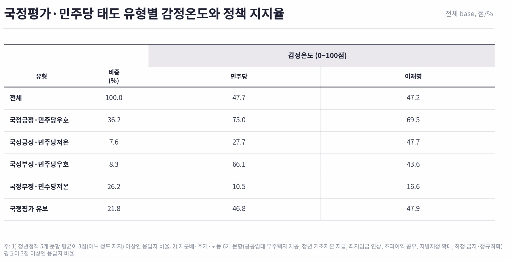
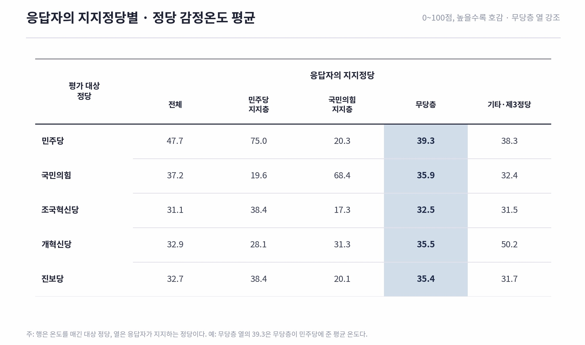
2) 정책과 정당의 분리 :이념지향성 대신 정책 효용
2030 청년들은 정책과 정당을 평가대상에서 분리하여 인식하는 경향을 보이며 이념이 아닌 정책효용에 반응하고 있다.
① 생활형 청년정책 전반의 높은 지지: 이재명 정부의 대표 청년정책 5개(월세 지원, 모두의 창업, 청년내일채움공제 시즌2, 공공임대 확대, 돌봄지원 확대) 모두 58.5% ~ 65.2%의 높은 찬성률(과반)을 기록했다.
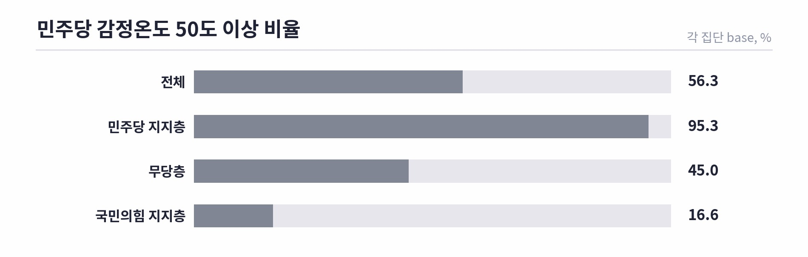
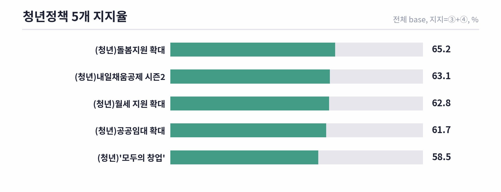
② 정당을 초월한 정책 공감대: ‘빚내서라도 내 집 마련’(민주 76.2% vs 국힘 77.2%), ‘AI 일자리 위협’(민주 69.4% vs 국힘 64.8%), ‘주식상승 자산형성 도움’(민주 61.5% vs 국힘 54.1%) 등 실생활 및 미래 자산·일자리 의제에서는 지지정당 간 격차가 10%p 미만에 불과했다.
③ 무당층의 정책 수용: 무당층 역시 청년정책 5개 전 문항에서 52.5%~57.8%로 과반의 지지를 보냈다.
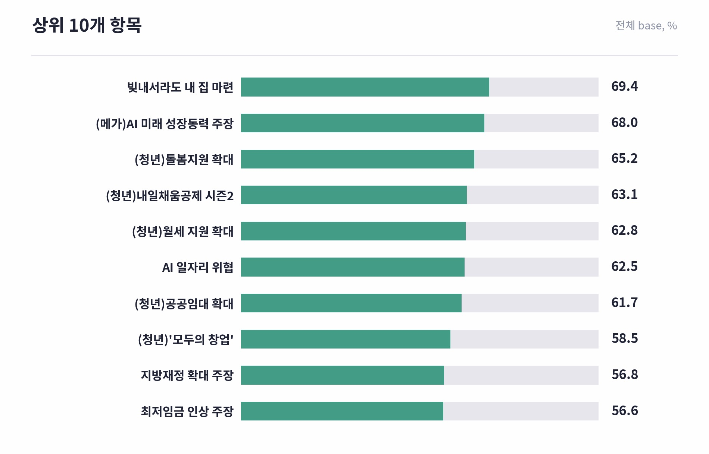
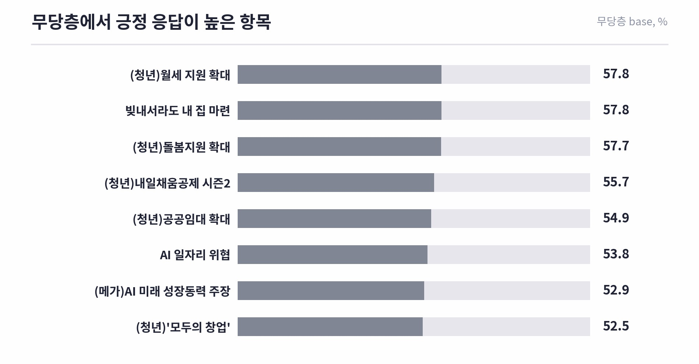
3) 젠더 또는 이념적 정체성과 정책지지 사이의 간극
2030 청년들은 자신의 이념적 정체성과 정책 지지 사이에 간극이 있다. 특히 젠더이슈와 사회의제에서 두드러지게 나타난다.
① 상징·정체성 거부 vs 구체적 정책 지지: 스스로를 ‘페미니스트’로 정체화하는 청년은 17.3%(모두 긍정 13.5%)에 불과하지만, 정체성은 없지만 미프진 도입·HPV 백신 지원·비동의 간음죄 등 구체적 젠더정책을 지지하는 집단은 36.3%에 달했다. 청년들은 이념적 라벨링(정체성)에는 거리를 두지만 실질적 권리·제도(정책)에는 넓게 동의한다.
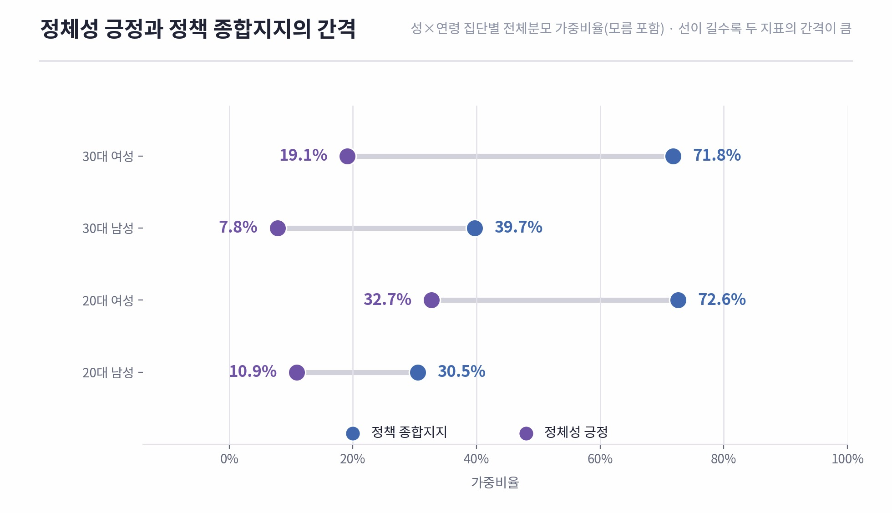
② 사회전망에 따른 정책 수용성 변화: 청년들의 노동·재분배 정책 지지는 ‘보수/진보’라는 고정된 이념보다 ‘사회에 대한 신뢰와 희망(사회전망)’에 크게 좌우된다. 사회전망이 높은 집단은 국민의힘 지지층 내부에서도 정책 동의 개수가 1.82개에서 3.60개로 2배 가까이 증가했다.
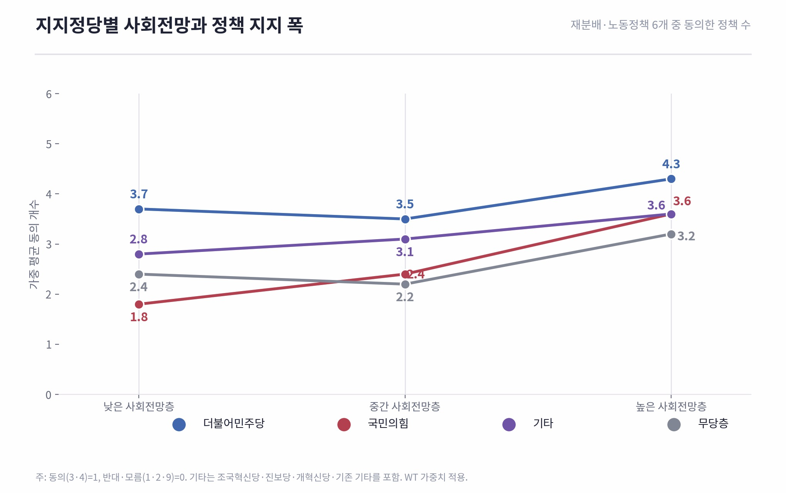
4) 진보당·정의당·조국혁신당 등 제3정당에 대한 태도 역시 이념적 거부가 아닌 ‘효용과 인물’
진보정당에 대해서도 마찬가지다. 이념적 거부감이 아니라 힘이 부족하거나 당선 가능성이 우려된다거나 정책과 인물에 대한 인지가 부족해서라는 등, 4050의 일반적 평가와 크게 다르지 않았다.
① 진보·개혁 제3당 투표 경험자는 20.4%에 달했고 이들 중 74.0%는 재투표 의향을 가지고 있다.
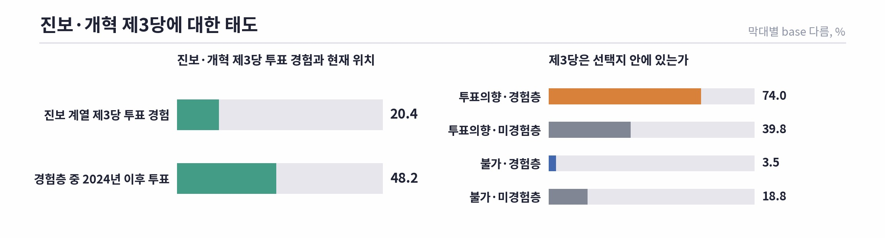
② 이념 불일치가 아닌 실질적 효용 중시: 진보당·정의당·조국혁신당 등 제3정당에 투표하지 않은 이유로 ‘정당 거부·이념 불일치’를 꼽은 응답은 9.7%에 그쳤다. 반면 ‘힘 부족·당선 가능성 우려’(46.2%)와 ‘정책·인물 인지 부족’(18.7%)이 압도적 다수를 차지했다.
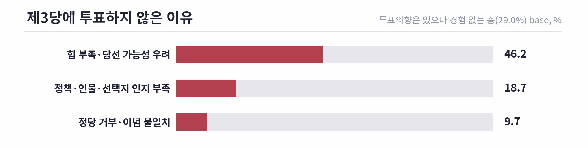
③ 선택 기준: 제3당 선택 조건 역시 ‘내 삶에 와닿는 정책’(58.2%), ‘매력적인 인물’(43.0%)이 핵심이었다
5) 극우청년의 실존
극우적 사고를 갖는 청년은 분명 존재한다. 하지만 그들이 청년의 다수를 점하고 있지는 않고 일부의 목소리가 과대대표되고 있는 것도 사실이다.
① 청년 극우의 실존과 과다대표 : 6·3 지방선거 투표·개표 부정 의혹을 전면적으로 신뢰하지 않는 ‘전면불신층’은 전체의 23.5% 수준이다. 이들 중 일부는 잠실 집회 등 행동력을 보이며 청년의 목소리를 과다대표하고 있다. 반면 대다수 청년은 상식적 제도 신뢰나 조건부 의혹 수준에 머문다.
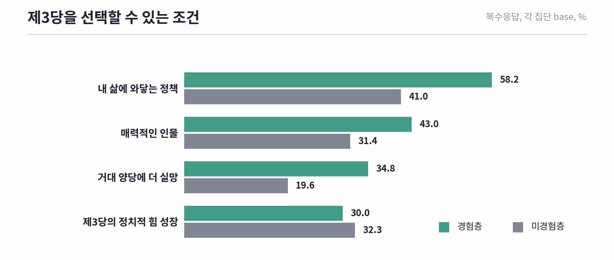
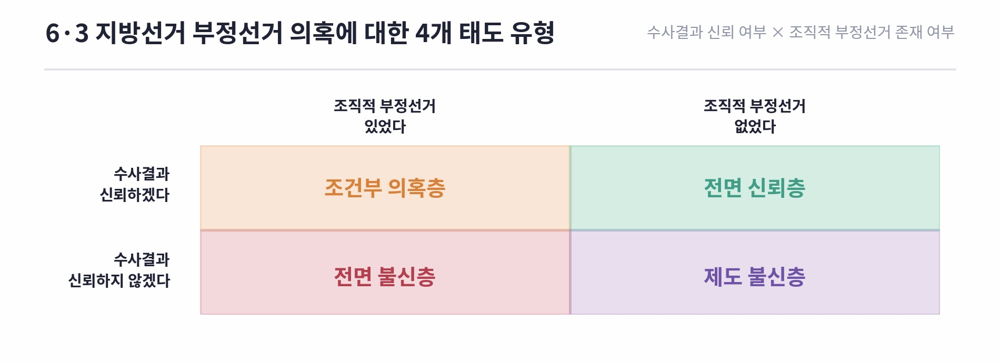
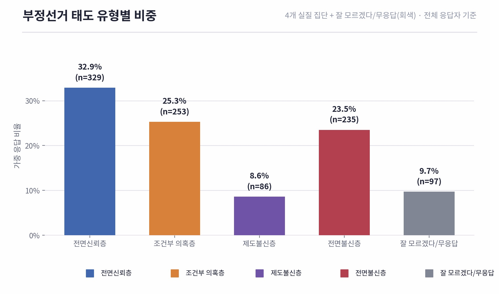
6) 사회에 대한 불만과 비관적 시각이 곧바로 진보적 정책에 대한 지지로 이어지지 않는다
사회에 대한 비관과 제도 불신은 무당층 잔류와 정책 수용성 하락으로 이어진다. 청년들은 진영 논리가 아닌, 구체적 삶을 바꾸는 제도 설계와 효용에 반응한다.
① 사회전망을 비관적으로 보는 2030 청년들은 노동·재분배 정책에 대한 수용도가 낮았다. 반면 사회전망이 높은 집단은 노동·재분배 정책에 대한 지지가 뚜렷하게 상승한다.
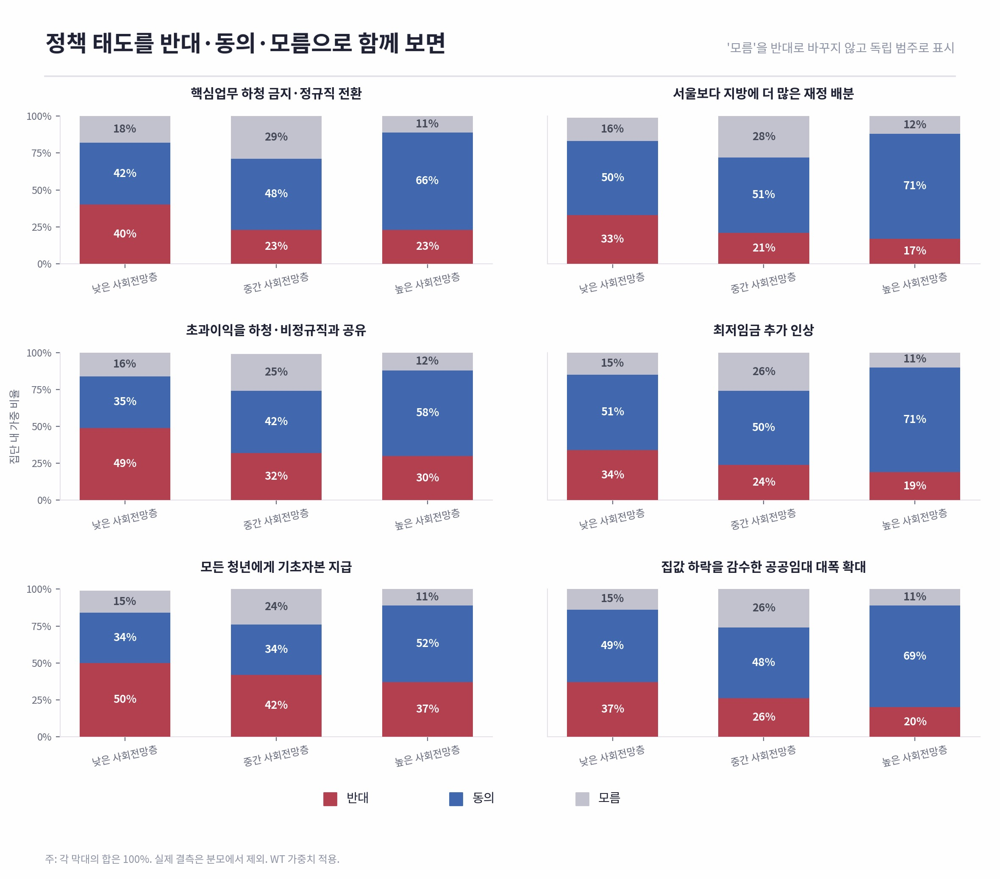
② 반면 사회전망이 높은 집단에서 민주당 지지비율이 높게 나타났고 낮은 집단에서 국민의힘 지지율이 높게 나타났다. 주목할 점은 사회전망이 낮은 집단 내에서 무당층의 비율이 가장 높다는 점이다.
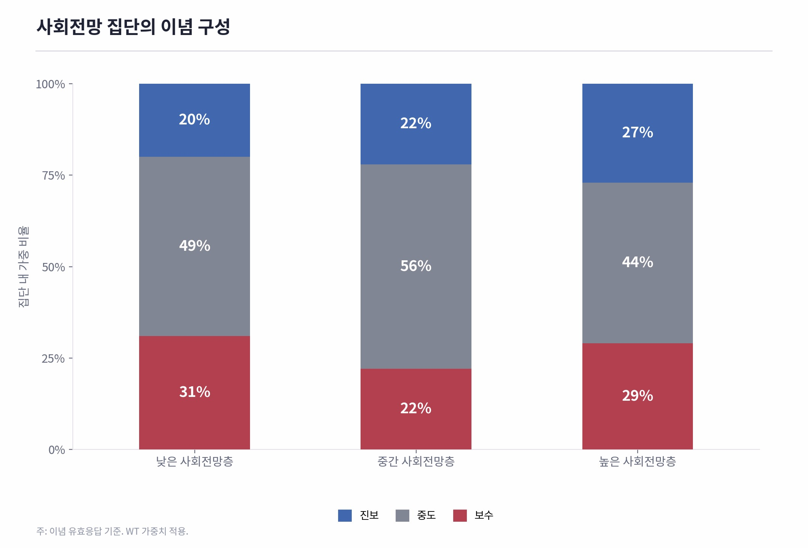
7) 결론
이번 조사 결과는 2030 청년이 보수화되었다는 통념에 의문을 제기한다. 청년 다수는 보수적 이념에 확고히 결집한 것이 아니라, 기존 정당 어디에도 충분히 대표되지 못한 채 유동하고 있다. 극우적 사고와 행동을 보이는 청년층이 분명 존재하지만, 이들의 높은 조직력과 가시성을 청년세대 전체의 성향으로 오인해서는 안 된다. 지금의 현실은 ‘청년의 보수화’라기보다 ‘진보적으로 해석되고 조직될 수 있는 요구가 정치적 주체를 만나지 못한 상태’에 가깝다.